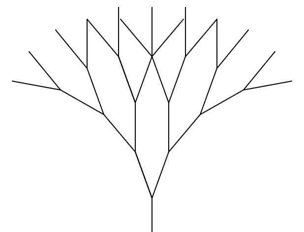

Fractal Fun!
Koch Curve
Basic curve koch_curve(t, 4, 20)

This is the basic Koch Curve except as the depth increases the size decreases. koch_curve(t, 6, 100)
def koch_curve(t, depth, size):
if (depth == 1):
t.fd(size)
else:
koch_curve(t, depth-1, size*0.6)
t.lt(60)
koch_curve(t, depth-1, size*0.6)
t.rt(120)
koch_curve(t, depth-1, size*0.6)
t.lt(60)
koch_curve(t, depth-1, size*0.6)
Sierpinski Triangle
Basic triangle sierpinski(t, 5, 200)

This function does not actually draw the triangle at the base case, instead what we see is the result of the turtle moving to position itself correctly.sierpinski(t, 6, 100)
def sierpinski(t, depth, size, scale_factor=1):
if depth > 1:
sierpinski(t, depth-1, size/2)
t.fd(size/2)
sierpinski(t, depth-1, size/2)
t.bk(size/2)
t.lt(60)
t.fd(size/2)
t.rt(60)
sierpinski(t, depth-1, size/2)
t.rt(120)
t.fd(size/2)
t.lt(120)
Trees
Basic tree tree(t, 4, 50, 20)

This tree has a number of modifications:
- Each branch gets shorter in length.
- Each branch gets smaller in width.
- The "leaves" are green while the branches are brown.
- Subtrees are drawn using a random angle within a range instead of the same angle each time.
tree(t, 10, 150, 20, 11)
def tree(t, depth, size, angle, width):
t.width(width)
if depth == 0:
t.pencolor("green")
t.fd(size)
t.bk(size)
t.pencolor("brown")
else:
t.pencolor("brown")
angle+= random.randrange(-5, 5)
size+= random.randrange(-5, 5)
t.fd(size)
t.rt(angle)
tree(t, depth-1, size * .75, angle, width-1)
t.lt(2 * angle)
tree(t, depth-1, size * .75, angle, width-1)
t.rt(angle)
t.bk(size)